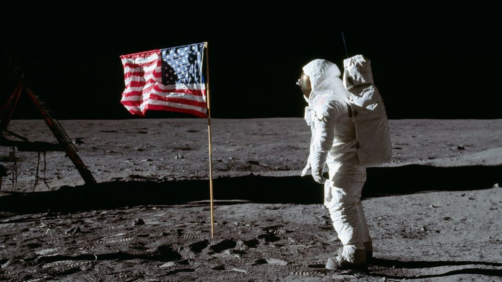
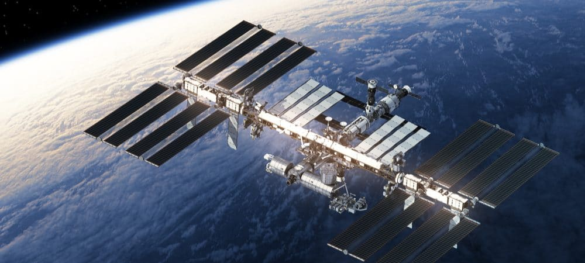

Biografia
NASA é a sigla em inglês para National Aeronautics and Space Administration (Administração Nacional da Aeronáutica e Espaço). Essa agência espacial estadunidense tem a função de pesquisar e desenvolver novas tecnologias, bem como cuidar da exploração do universo, buscando sempre entender como o cosmo foi criado.
A NASA foi fundada durante a Guerra Fria, em 1958, no mandato de Dwinght D. Eisenhower, o 34° presidente dos Estados Unidos, no contexto da corrida espacial travada entre norte-americanos e soviéticos para “dominar” o espaço. A agência estadunidense substituiu a NACA (National Advisory Committee for Aeronautics – Comitê Consultivo Nacional para Aeronáutica), que desenvolvia pesquisas e investigações aeronáuticas desde 1915.
Atualmente as missões da NASA que mais chamam a atenção de especialistas e pessoas de todo o mundo são a Missão Juno, que tem por objetivo conhecer mais sobre o planeta Júpiter; a Missão Curiosity Mars Rover, que explora o planeta vermelho (Marte) por meio de sondas; e o telescópio espacial Hubble, que representa uma grande evolução no conhecimento do universo.
Missões da NASA
Desde seu surgimento, a NASA desenvolveu inúmeras missões. Os objetivos delas vão desde conhecer os impactos do espaço sobre o corpo humano até a descoberta de planetas semelhantes à Terra (Missão Kepler 2014). Veja algumas das missões e programas feitos pela NASA.
Programa Mercury
Iniciado em 1958, foi o programa inaugural da NASA. O objetivo era lançar um astronauta para o espaço e analisar o comportamento do corpo humano. Em maio de 1961, o astronauta Alan Shepard foi ao espaço a bordo da nave Freedom 7. Em 1962, John Glenn tornou-se o primeiro estadunidense a orbitar o planeta por meio da cápsula espacial Friendship 7. A URSS lançou a primeira pessoa ao espaço em março de 1961. O cosmonauta Yuri A. Gagarin foi ao espaço a bordo da nave Vostok I.
Projeto Apollo
A missão Apollo tinha como objetivo levar o homem à Lua. Ao contabilizar todas as missões Apollo que foram tripuladas, um total de doze astronautas foram à Lua entre 1969 e 1972. O primeiro homem a pisar em solo lunar foi Neil Armstrong, a bordo da Apollo 11, em 1969.
Estação espacial internacional (EEI)
A Estação Espacial Internacional é um laboratório espacial para execução de diversas pesquisas. A instalação que orbita a Terra foi concluída em 2011 e é o maior satélite artificial já feito. A NASA fornece datas e horários da passagem da estação espacial que pode ser vista a olho nu.
